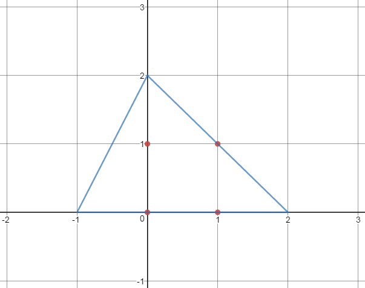

Cho n điểm với tọa độ nguyên trên một mặt phẳng . Các điểm đã cho thỏa mãn điều kiện là : 3 điểm bất kì trong n điểm trên tạo thành một tam giác có diện tích không vượt quá S .
Tam giác đẹp là tam giác chứa tất cả n điểm trên .
Yêu cầu : Hãy chỉ ra một tam giác đẹp mà diện tích của tam giác đó không vượt quá 4 x S .
Đưa ra tọa độ của 3 điểm tam giác đó .
INPUT :
Dòng đầu gồm 2 số nguyên dương n , S ( 3 < n < 5000 , 1 < S < 1018 ) .
n dòng sau mỗi dòng gồm 2 số xi , yi ( -108 < xi , yi < 108 ) .
OUTPUT :
Đưa ra tọa độ của 3 điểm tam giác đó .

Lưu ý : Bài có checker vì vậy bạn đưa ra một tam giác thỏa mãn điều kiện trên mà không giống với output thì vẫn sẽ đúng